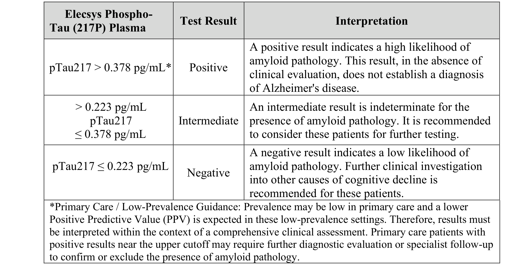
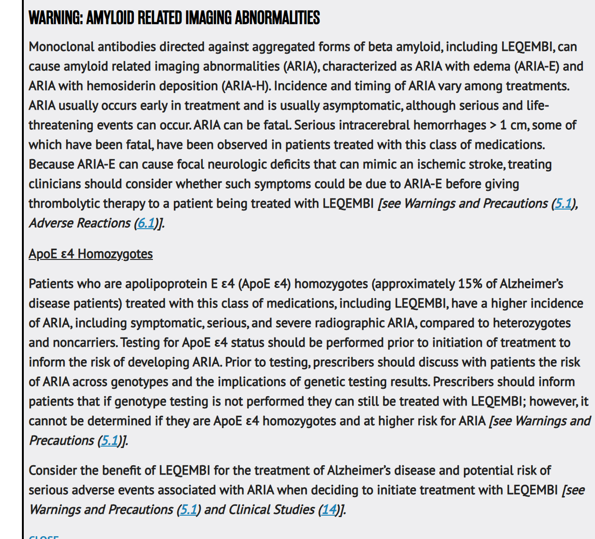
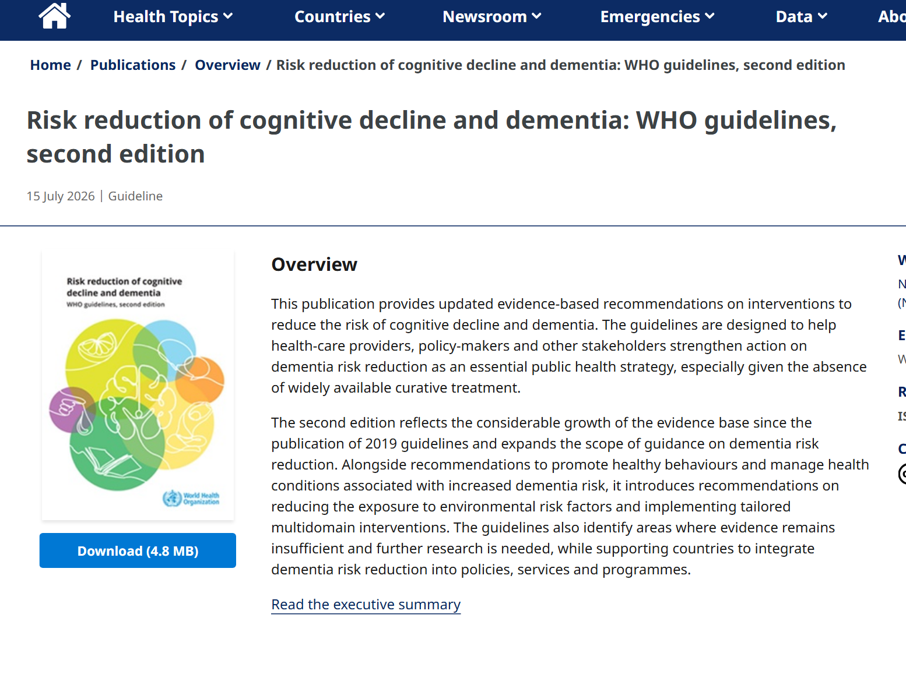

PGY 核心課程｜老年周全性評估 CGA
認知評估異常
之後，下一步
從篩檢分數，到一份做得到的照護計畫
陳培豪 醫師
馬偕紀念醫院 神經科・失智防治中心主任
2026 年 11 月
各位 PGY 醫師大家好，我是馬偕神經科的陳培豪。
今天不談量表怎麼考幾分，而是談分數異常之後，第一線醫師下一步要做什麼。
我們會跟著一位七十一歲的林先生，走完五站，最後寫出一份真的做得到的照護計畫。
篩檢陽性之後，要依序走完五站
每一站都要產出一個決定；不能跳站
1
排除急症
譫妄、紅旗、藥物、檢驗、MRI、安全
2
症候群與分期
知情者、MoCA、IADL、CDR：MCI 或失智
3
生物標記
2026 血液檢測、前測機率、PET／CSF
4
治療決策
症狀藥物、抗類澱粉抗體、ARIA、BPSD
5
照護閉環
WHO 2026、長照、照顧者、預立醫療
⚠
最常見的三種跳站
沒排譫妄就判讀分數；沒看功能就下診斷；沒有症候群就抽標記
先排急症 → 確認症候群與分期 → 才問病因 → 治療 → 閉環
出處：Atri A, et al. Alzheimers Dement 2025;21:e14333. PMID 39713942｜Jack CR Jr, et al. Alzheimers Dement 2024;20:5143–69. PMID 38934362
今天的路線分五站，每一站都要做出一個決定。
第一站，排除不能等的事。
第二站，確認症候群，再用功能分期。
第三站才問病因，談血液檢測。
第四站是治療決策。
第五站，把照護變成閉環。
最常見的錯誤就是跳站：沒排譫妄就判讀分數，沒看功能就下診斷，沒有症候群就抽標記。
林先生 71 歲：女兒說「爸爸不太對勁」
教學用複合個案（作者自擬，非真實病人）
基本資料
退休公務員，教育 12 年；高血壓、高血脂；BMI 26.8；母親 75 歲診斷失智
門診初篩
AD8 5／8（女兒填）、MoCA 23／30、MMSE 27／30、SPMSQ 錯 1 題
記憶
同一件事反覆問
執行功能
繳水電帳單常出錯
視空間
熟悉超市找不到路
安全
煮湯忘記關火
精神行為
新發焦躁
病程
半年內逐漸變差
主訴來自女兒，線索橫跨記憶、執行、視空間、安全與行為
這是今天全程的教學個案，七十一歲的林先生。
他教育十二年，有高血壓和高血脂，母親七十五歲診斷失智。
初篩 AD8 五分，MoCA 二十三分，但 MMSE 有二十七分。
女兒說他同一件事反覆問，帳單常出錯。
去熟悉的超市找不到路，煮湯忘了關火。
個性變得焦躁，而且是半年內慢慢變差。
請大家記住這幾條線索，接下來每一站，我們都要替林先生做一個決定。主訴來自女兒，這一點本身就是線索，病人常常覺得自己沒事。
決策點 1：今天門診的第一步？
林先生 71 歲，AD8 5／8、MoCA 23／30；女兒說他半年來帳單出錯、超市迷路、忘了關火
分數異常不是診斷，第一步是抬頭看病人
出處：Atri A, et al. Alzheimers Dement 2025;21:e14333. PMID 39713942｜Palmqvist S, et al. Alzheimers Dement 2025;21:e70535. PMID 40729527｜Petersen RC, et al. Neurology 2018;90:126–35. PMID 29282327
林先生的 AD8 五分，MoCA 二十三分。請先想一想，今天門診的第一步是什麼？
選抽血的同學，這一步太早了。血液檢測要用在有症狀、而且已經完成臨床評估的人。
開 donepezil 也太早。症候群和分期都還沒確認，MCI 也沒有高品質的用藥證據。
正解是先確認急性變化、譫妄、藥物和安全，再向知情者問功能。
類澱粉 PET 也不急，結果會影響治療決策時才需要安排。
01
排除急症
RULE OUT THE URGENT FIRST
- 1急性、波動、注意力不集中：先當譫妄
- 2紅旗：當天影像或急診
- 3藥物、檢驗、MRI：找可處理的因素
- 4安全 CGA：第一天指定負責人
AI 生成示意
第一站。看到低分，第一個動作不是翻量表，而是抬頭看病人。
是不是急性混亂？有沒有不能等的神經急症？有哪些藥物和安全問題要今天處理？
譫妄或失智？看起病、波動與注意力
Confusion Assessment Method（CAM）：① ＋ ② ＋（③ 或 ④）
| 譫妄 | 失智（AD 型） | |
|---|---|---|
| 起病 | 數小時至數天 | 數月至數年 |
| 病程 | 一天內起伏波動 | 緩慢逐步進展 |
| 注意力 | 明顯受損 | 早期相對保留 |
| 意識 | 可改變 | 早期清醒 |
| 處置 | 當急症找原因 | 完整評估、長期照護 |
①
急性發作＋波動
必要
②
注意力不集中
必要
③
思考紊亂
二擇一
④
意識改變
二擇一
林先生：半年漸進、無波動、注意力保留，不像譫妄
出處：Inouye SK, et al. Ann Intern Med 1990;113:941–8. PMID 2240918
譫妄是醫療急症，要從三件事分辨：起病、波動和注意力。
譫妄幾小時到幾天發生。
一天之內起伏波動。
注意力明顯受損，這是最關鍵的差別。
所以譫妄要當急症找原因，量表延後再測。
CAM 判讀，前兩項都要有。
再加上思考紊亂或意識改變其中一項。林先生半年漸進、沒有波動，不像譫妄。
另外要記得，失智的人也會疊加譫妄。住院病人的低分，常常是急性混亂，不是失智本身，所以出院後要再評估一次。
4AT：兩分鐘篩譫妄
四題、不需訓練；急診與病房都能用
| 題目 | 內容 | 計分 |
|---|---|---|
| 警覺度 | 嗜睡或躁動 | 0／4 |
| AMT4 | 年齡、生日、地點、年份 | 0／1／2 |
| 注意力 | 月份倒數 | 0／1／2 |
| 急性變化 | 兩週內或仍波動 | 0／4 |
合併敏感度（95% CI 0.80–0.93）
0.88
17 研究、3,702 次觀察
合併特異度（95% CI 0.82–0.92）
0.88
研究中譫妄盛行率 24.2%
總分判讀
≥4 可能譫妄
1–3 可能認知障礙；0 不太可能
4AT ≥4 分就當可能譫妄處理，先找原因
出處：Tieges Z, et al. Age Ageing 2021;50:733–43. PMID 33951145｜4AT 官方說明 https://www.the4at.com
床邊最實用的工具是 4AT，兩分鐘完成。
第一題看警覺度。
第二題問年齡、生日、地點和年份。
第三題月份倒數。
第四題看有沒有急性變化。
統合分析的敏感度和特異度都是零點八八。
總分四分以上，就當可能譫妄處理。
第一題和第四題各佔四分，只要明顯異常就直接達到切點。兩分鐘的工具，換來的是不漏掉一個醫療急症。
APA 2025 譫妄指引：先非藥物
15 項聲明（12 項建議、3 項提議）；括號內為建議強度與證據等級
要做
定期結構化評估（1C）；建立認知基準（1C）；詳細藥物回顧（1C）
第一線
多元非藥物介入，用於預防與處置（1B）
不要做
抗精神病藥不用於預防或加速緩解（1C）；無特定適應症不用苯二氮平類（1C）
有條件用
抗精神病藥：降階失敗、已處理誘因，且有顯著痛苦或傷害風險（1C）
譫妄不是開一顆藥解決，而是找原因、改環境、少用藥
出處：American Psychiatric Association. Updated guideline for delirium, 2025-09-02, https://www.psychiatry.org/News-room/News-Releases/APA-Published-Updated-Guideline-for-Delirium ｜Crone C, et al. Am J Psychiatry 2025;182:880–4. PMID 40887950
去年美國精神醫學會更新了譫妄指引，共十五項聲明。
要定期評估，建立認知基準，並仔細回顧藥物。
第一線是多元的非藥物介入。
抗精神病藥不用來預防，也不用來加速緩解。
只有降階失敗、誘因已處理，而且有顯著痛苦或傷害風險時，才考慮使用。
請注意，這和過去習慣開 haloperidol 的做法很不一樣。病人轉出時，譫妄評估和藥物回顧也要寫進交班，家屬也要一起衛教。
紅旗：出現任一項就不是門診慢慢追
有紅旗就當天影像或送急診
局灶神經徵象
突發單側無力、失語、偏盲：想到中風、腫瘤
頭傷或抗凝藥物
跌倒、抗凝或抗血小板藥、新發頭痛：想到慢性硬腦膜下出血
數週內快速惡化
合併肌陣攣、癲癇、精神症狀：想到庫賈氏病、自體免疫腦炎
發燒、頸部僵硬、意識改變
合併感染徵象或免疫低下：想到中樞神經感染
林先生：神經學檢查正常、無頭傷、無快速惡化，可安排門診完整評估
出處：Atri A, et al. Alzheimers Dement 2025;21:e14333. PMID 39713942
再來是四組神經急症紅旗。
局灶徵象，想到中風或腫瘤。
老人跌倒或吃抗凝藥，慢性硬腦膜下出血常常只表現成最近變糊塗。
數週內快速惡化，想到庫賈氏病和自體免疫腦炎。
發燒、頸部僵硬、意識改變，要想到感染。林先生都沒有。
這四組紅旗，門診三分鐘就能問完。問到一項，就不要等三個月後的神經心理測驗。
基本檢驗：找會加重認知的共病
不是找「可逆的失智」，單一可逆原因其實很少見
| 項目 | 為什麼要驗 | 林先生 |
|---|---|---|
| CBC | 貧血、感染；大球性提示 B12 缺乏 | Hb 14.2 g/dL |
| 電解質、鈣、肝腎 | 低鈉、高血鈣、肝腎腦病變 | Na 140；eGFR 78 |
| 血糖、HbA1c | 反覆低血糖或血糖失控 | HbA1c 5.8% |
| TSH | 甲狀腺低下：淡漠、反應慢 | 2.1 mIU/L |
| B12（± 葉酸） | 缺乏時補充才有意義 | 正常 |
| 梅毒、HIV | 依風險與病史加做 | 梅毒血清陰性 |
這些檢驗找的是共病，不要對家屬過度承諾會恢復
出處：Atri A, et al. Alzheimers Dement 2025;21:e14333. PMID 39713942；林先生數值為教學個案
基本檢驗的目的，是找出會讓認知更差的問題。
全血球看貧血和感染。
接著驗電解質、血鈣，還有肝腎功能。
血糖要看有沒有反覆低血糖。
甲狀腺低下常常表現成淡漠和反應慢。
B12 缺乏才需要補充。
梅毒和 HIV 依風險加做。單一可逆原因很少見，不要對家屬過度承諾。
教科書常說可逆性失智，但實際上找到單一原因、治療後完全恢復的情況很少。對家屬要說，我們在找會讓情況更差的問題。
停一顆藥，常比加一顆藥有效
2023 AGS Beers：失智或認知障礙者避免以下藥物
| 類別 | 常見品項 | 可能後果 |
|---|---|---|
| 第一代抗組織胺 | diphenhydramine、hydroxyzine、chlorpheniramine | 混亂、便秘、尿滯留 |
| 膀胱抗痙攣藥 | oxybutynin、tolterodine | 記憶與注意力變差 |
| 三環抗憂鬱藥 | amitriptyline、imipramine | 抗膽鹼負擔、姿勢性低血壓 |
| 苯二氮平、Z-drugs | lorazepam、diazepam、zolpidem | 嗜睡、跌倒、夜間混亂 |
| 抗精神病藥 | haloperidol、quetiapine、risperidone | 中風與死亡風險增加 |
雲端藥歷加成藥一起盤點；一次改一項並記錄變化
出處：2023 AGS Beers Criteria. J Am Geriatr Soc 2023;71:2052–81. PMID 37139824
第三件事是審視用藥，這是最常見的醫源性認知變差。
感冒藥和止癢藥裡的第一代抗組織胺。
治頻尿的膀胱抗痙攣藥。
三環抗憂鬱藥。
安眠藥和苯二氮平類。
還有抗精神病藥。雲端藥歷、成藥和中草藥要一起盤點，一次只改一項。林先生只吃血壓和血脂藥。
請特別留意長輩自己買的感冒藥和安眠藥。停掉一顆抗膽鹼藥，常常比加一顆失智藥更快看到效果。
MRI 同時回答三個問題
支持哪個病因？血管負擔多重？未來治療安不安全？
MTA 2
內側顳葉萎縮
海馬中度萎縮：支持 AD 型退化
Fazekas 1
白質高訊號
零星點狀：血管負擔輕
微出血 1 顆
SWI／GRE
無表面鐵質沉積：未達排除條件
陰性
排除性病灶
無腫瘤、硬腦膜下出血、梗塞、水腦
≥2 顆微出血或任何表面鐵質沉積都是 ARIA 風險因子；微出血 >4 顆為試驗排除
出處：Scheltens P, et al. JNNP 1992;55:967–72. PMID 1431963｜Fazekas F, et al. AJR 1987;149:351–6. PMID 3496763｜LEQEMBI Prescribing Information, DailyMed SPL 2026-07-21, §5.1；林先生影像為教學個案
MRI 不只排除腫瘤，同時回答三個問題。
林先生內側顳葉萎縮兩分，支持 AD 型退化。
白質病變輕微，血管負擔不重。
微出血一顆，沒有表面鐵質沉積。這決定未來能不能用抗類澱粉抗體。
同時也排除了腫瘤、硬腦膜下出血和水腦。
很多人以為 MRI 只是排除腫瘤。其實今天的微出血和鐵質沉積，就是明天能不能接受新藥的安全底線。
安全 CGA：第一天就指定負責人
產出是「誰、什麼時候、做什麼」，不是勾選表
| 風險 | 林先生的線索 | 今天的行動 | 負責人 |
|---|---|---|---|
| 駕駛騎車 | 熟悉路線迷路 | 暫停騎車，安排評估 | 醫師＋女兒 |
| 爐火家電 | 忘記關火 | 自動熄火或改電磁爐 | 女兒 |
| 財務詐騙 | 帳單出錯 | 自動扣繳、大額雙人確認 | 女兒＋銀行 |
| 走失 | 超市迷路一次 | 愛心手鍊、指紋建檔 | 社工＋家屬 |
| 用藥 | 自行服藥 | 一週藥盒、家屬核對 | 女兒 |
醫師一句話，常比家屬勸三個月有效
出處：Atri A, et al. Alzheimers Dement 2025;21:e14333. PMID 39713942；教學個案
第一站的最後一件事，是安全。
駕駛和騎車，今天就先暫停。
爐火可以加裝自動熄火。
財務改自動扣繳，大額要兩個人確認。
走失要做愛心手鍊和指紋建檔。
用藥用一週藥盒。每一項都要指定負責人，寫進病歷。
你可以這樣說：為了您和家人的安全，從今天起先暫停騎車。醫師一句話，常常比家屬勸三個月更有效。
02
症候群與分期
CONFIRM THE SYNDROME, STAGE BY FUNCTION
- 1AD8 看改變，MoCA 看哪裡不好
- 2MMSE 正常不能排除 MCI
- 3分數之前，先檢查測驗品質
- 4MCI 與失智的分界在日常功能
- 5CDR 定分期，CDR-SB 看變化
AI 生成示意
第二站。排除急症之後，描述這個人的認知哪裡出問題，再用日常功能決定分期。
工具沒有好壞，只有用對場合。
每個量表回答的問題不一樣
沒有萬用工具；門診三分鐘用 AD8 或 Mini-Cog 入門
| 工具 | 誰答／時間 | 滿分 | 擅長 | 限制 |
|---|---|---|---|---|
| AD8 | 知情者／3 分 | 8 | 抓改變，極輕度也敏感 | 受觀察多寡影響 |
| Mini-Cog | 病人／3 分 | 5 | 快，受教育影響小 | 看不出認知域 |
| MMSE | 病人／7–10 分 | 30 | 歷史久、健保常用 | 天花板效應 |
| MoCA | 病人／10–15 分 | 30 | 執行、視空間、回憶 | 低教育需校正 |
| CASI | 病人／15–20 分 | 100 | 台灣常模完整 | 耗時、需受訓 |
MoCA 才看得出認知域；追蹤要用同一工具
出處：Galvin 2005 PMID 16116116｜Borson 2000 PMID 11113982｜Folstein 1975 PMID 1202204｜Nasreddine 2005 PMID 15817019｜Teng 1994 PMID 8054493
先看工具。每個量表回答的問題不一樣。
AD8 由知情者回答，抓的是改變。
Mini-Cog 三分鐘，受教育影響小。
MMSE 健保常用，但對輕微障礙不敏感。
MoCA 加入執行功能和延遲回憶。
CASI 台灣常模完整，但耗時。
所以門診三分鐘，先用 AD8 或 Mini-Cog 入門。真的要看認知域，再用 MoCA。追蹤的時候，要用同一個工具才能比較。
AD8：問知情者「和以前比有沒有改變」
比的是病人自己的過去，不是同齡常模；實心＝林先生勾選
1判斷力變差
2對活動嗜好興趣降低
3重複相同問題或故事
4學用工具家電有困難
5忘記正確年份月份
6處理複雜財務有困難
7記不住約會時間
8持續有思考記憶問題
區分正常與失智（切點 ≥2）
AUC 0.961
敏感度 97.6%、特異度 78.1%
區分正常與極輕度失智
AUC 0.948
敏感度 95.9%、特異度 78.1%
林先生
5／8
第 1、3、6、7、8 題
AD8 ≥2 分就值得完整評估；女兒的觀察是最有價值的病史
出處：Galvin JE, et al. Neurology 2005;65:559–64. PMID 16116116｜Yang YH, et al. Am J Alzheimers Dis Other Demen 2011;26:134–8. PMID 21415088（台灣，n=239）
AD8 問的是和以前比有沒有改變。
比的是病人自己的過去，所以高教育者的早期變化也抓得到。
台灣驗證，切點兩分，區分正常和極輕度失智的 AUC 是零點九四八。
林先生五分，女兒的觀察是最有價值的病史。
偵測 MCI，MoCA 明顯優於 MMSE
台北榮總記憶門診 n=207：AD 98、MCI 71、正常 38
最佳切點
23／24
門診族群
敏感度／特異度
92%／78%
偵測 MCI
到了失智階段兩者都分得出來；切點隨族群與教育而變
出處：Tsai CF, et al. Int Psychogeriatr 2012;24:651–8. PMID 22152127
為什麼要做 MoCA？看台灣的資料。
偵測 MCI，MoCA 的 AUC 零點九一，MMSE 只有零點八一。
最佳切點二十三比二十四，敏感度九成二。切點會隨族群和教育改變，不要死背。
到了失智階段，兩個量表都分得出來。差別在最早期，也就是我們最需要介入的時候。林先生仍然需要功能評估。
看失分落在哪裡，比總分更有用
原始 22 分＋教育 ≤12 年加 1 分＝23／30
型態解讀
延遲回憶最差，提示後只多想起 1 個字；合併視空間與執行失分：多認知域
分數只描述哪裡不好；是不是 MCI，要看功能
出處：Nasreddine ZS, et al. J Am Geriatr Soc 2005;53:695–9. PMID 15817019｜Tsai 2012 PMID 22152127；教學個案
林先生二十三分，要再看失分的位置。
延遲回憶最差，五個字只記得兩個。
視覺空間和執行功能，也都有失分。
命名和抽象保留。
這是以記憶為主、合併執行功能的型態。但這是描述，不是診斷。
同一天四個分數，為什麼結論不同？
林先生若只做 SPMSQ 或 MMSE，就會被放回家
9／10
SPMSQ
錯 1 題：落在正常
27／30
MMSE
看似正常
5／8
AD8（女兒）
切點 ≥2：明顯異常
23／30
MoCA
切點 23／24：異常
篩檢「通過」不等於正常：高教育者容易代償
出處：Yang 2011 PMID 21415088｜Tsai 2012 PMID 22152127；教學個案
同一個人，同一天，四個分數。
SPMSQ 和 MMSE 看起來正常，因為題目以定向和簡單記憶為主，高教育者容易代償。
AD8 和 MoCA 都異常，一個看日常改變，一個看執行功能和延遲回憶。工具敏感度不同，不是誰對誰錯。
如果這位病人只做 SPMSQ 或 MMSE，他就會被放回家。篩檢通過，不等於正常。結論要整合知情者、認知域和功能。
決策點 2：MMSE 27 分，是不是沒事？
女兒問：「分數正常，我們可以回家了嗎？」
MMSE 在台灣門診偵測 MCI 的 AUC 只有 0.81
出處：Tsai 2012 PMID 22152127｜Petersen RC, et al. Neurology 2018;90:126–35. PMID 29282327（PubMed 標示 retired）
女兒問，MMSE 二十七分正常，是不是沒事了？
選 A 不對，單一切點不夠。
選 B 也不好，半年後再測會延誤安全介入。
正解是 C，要合併知情者、MoCA 和日常功能。
選 D 順序錯了，血液標記不能取代臨床評估。
判讀分數前，先檢查五件事
今天的分數，反映的是大腦，還是測驗條件？
1
感官
老花眼鏡、助聽器有戴嗎？
2
語言識字
母語？會寫字嗎？
3
教育文化
常模適用嗎？
4
情緒動機
焦慮、憂鬱、被考試感
5
急性狀況
感染、疼痛、沒睡好、新藥
林先生：戴老花眼鏡、國語施測、無急性疾病：分數可信，可當追蹤基準
出處：Atri A, et al. Alzheimers Dement 2025;21:e14333. PMID 39713942
判讀之前，先檢查測驗品質。
老花眼鏡和助聽器有沒有戴。
用的是不是母語。
常模適不適用。
是不是焦慮或覺得被考試。
有沒有急性狀況。報告上要寫施測條件，追蹤才能比較。
同一位長輩，忘了戴老花眼鏡，或聽不清楚指令，分數都可能掉好幾分。林先生這次施測條件良好，可以當追蹤基準。
MCI 與失智的分界在日常功能
客觀測驗加日常功能才能定位
正常老化
偶爾忘記，事後想得起來
SCD
自覺退步，客觀測驗正常
MCI
測驗異常，複雜活動仍可獨立
失智
日常活動需要他人協助
65 歲以上 MCI 追蹤 2 年，累積失智發生率 14.9%；也可能持平或回復
出處：Petersen 2018 PMID 29282327（retired，流行病學數據仍常被引用）｜Jessen F, et al. Lancet Neurol 2020;19:271–8. PMID 31958406
認知變化是一道光譜。
正常老化，事後想得起來。
SCD 是自覺退步，但測驗正常。
MCI 測驗異常，複雜活動仍能獨立。
失智就需要他人協助。
右邊是 MCI 盛行率，隨年齡上升。兩年累積失智發生率百分之十四點九，但也可能持平或回復。
所以對家屬，不要急著貼標籤，要定期追蹤。最重要的分界，只有一個：複雜的日常活動，還能不能獨立完成。
IADL 先壞：問「怎麼做」不要問「會不會」
「上個月水電費誰繳的？有沒有出錯？誰在檢查？」
| Lawton IADL | 林先生（女兒描述） | 判斷 |
|---|---|---|
| 使用電話、購物、家務 | 獨立，偶爾重複買 | 獨立 |
| 備餐 | 可煮，曾忘記關火 | 有失誤 |
| 交通 | 熟悉地點迷路一次 | 有失誤 |
| 服藥 | 藥盒＋女兒核對 | 有失誤 |
| 財務 | 帳單出錯，女兒開始覆核 | 有失誤 |
| Katz ADL | 進食到大小便控制 | 6／6 獨立 |
判斷關鍵：是效率變差，還是必須有人接手？
出處：Lawton MP, Brody EM. Gerontologist 1969;9:179–86. PMID 5349366｜Katz S, et al. JAMA 1963;185:914–9. PMID 14044222；教學個案
功能評估，問法很重要。不要問會不會繳費，要問上個月是誰繳的。
電話和購物大致獨立。
備餐有失誤。
交通有失誤。
服藥要女兒核對。
財務開始由女兒覆核。
基本日常活動六項都獨立。關鍵是效率變差，還是必須有人接手。
CDR：六個向度，各自 0 到 3 分
訪談病人與知情者後的臨床判斷，約 30 分鐘；個人照顧沒有 0.5
| 向度 | 0.5 疑似 | 1 輕度 | 2 中度 |
|---|---|---|---|
| 記憶（主要） | 持續輕微健忘 | 近事中度喪失 | 只記得熟練內容 |
| 定向感 | 時間輕微困難 | 可能迷路 | 常失去時間定向 |
| 判斷解決問題 | 輕微受損 | 中度困難 | 嚴重受損 |
| 社區事務 | 輕微受損 | 無法獨立，可參與部分 | 家外無法獨立 |
| 家居嗜好 | 輕微受損 | 放棄較難的 | 只做簡單家事 |
| 個人照顧 | （無 0.5） | 需要提醒 | 需協助穿衣清潔 |
CDR 是臨床判斷，不是把量表分數換算過去
出處：Morris JC. Neurology 1993;43:2412–4. PMID 8232972
CDR 有六個向度，記憶是主要向度。它是訪談病人和知情者之後的臨床判斷，不是把量表分數換算過去。
個人照顧這一項沒有零點五分。訪談要分別問知情者和病人，大約三十分鐘，所以需要訓練，不是看分數換算。
記憶定錨、其餘多數決；SB 把六格相加
Global CDR 用來分期，CDR-SB 用來追蹤
規則 1：≥3 項與 M 相同
CDR＝M
規則 2：多數偏同一側
取多數；3 比 2 分兩側則＝M
特例
M＝0.5 且 ≥3 項 ≥1：CDR＝1
| CDR-SB | 分期 |
|---|---|
| 0 | 正常 |
| 0.5–4.0 | 疑似／極輕度 |
| 4.5–9.0 | 輕度失智 |
| 9.5–15.5 | 中度失智 |
| 16–18 | 重度失智 |
分數重疊時，仍回到 IADL 是否需要他人接手
出處：Morris 1993 PMID 8232972｜O'Bryant SE, et al. Arch Neurol 2008;65:1091–5. PMID 18695059
計分有三條規則。
三項以上和記憶相同，就等於記憶分數。
否則取多數那一側。
還有兩個特例要記。
CDR-SB 把六格相加，適合追蹤細微變化。
Global CDR 用來分期，CDR-SB 用來追蹤，一年半分的變化也看得到。零點五到四分同時涵蓋 MCI 和極輕度失智，所以分數重疊時，還是回到功能。
林先生的 CDR：先算再揭曉
M＝0.5；五項次要向度依序為 0.5、0.5、0.5、0、0
0.5
記憶
近事遺忘，提示有幫助
0.5
定向
熟悉地點迷路一次
0.5
判斷
帳單出錯、受推銷影響
0.5
社區事務
社團需女兒陪同
0
家居嗜好
大致維持
0
個人照顧
完全自理
記錄基準：CDR 0.5、CDR-SB 2.0
出處：Morris 1993 PMID 8232972｜O'Bryant 2008 PMID 18695059；教學個案
請大家自己算林先生的 CDR。
記憶、定向、判斷、社區都是零點五，家居和個人照顧是零。
三項次要向度和記憶相同，所以 Global CDR 是零點五，六格相加是二點零。
決策點 3：MCI，還是輕度失智？
CDR 0.5、CDR-SB 2.0；IADL 有失誤但提醒後仍能完成；ADL 6／6
灰色地帶要講清楚：判斷會隨「誰接手」而改變
出處：Jack CR Jr, et al. Alzheimers Dement 2024;20:5143–69. PMID 38934362｜O'Bryant 2008 PMID 18695059
林先生是 MCI，還是輕度失智？
選 A 不對，分數不決定分期。
正解是 B，MCI。但如果女兒已經必須接手財務和用藥，就要改判輕度失智。
選 C 也不對，改變是持續的。
選 D 問錯問題，病因回答為什麼，不回答多嚴重。
03
生物標記
ETIOLOGY AND BIOMARKERS
- 12024 準則：生物學與臨床分期是兩條軸
- 2FDA 已許可四支血液檢測
- 3判讀：三區結果與前測機率
- 4不驗無症狀者；p-tau217 也有極限
AI 生成示意
第三站。林先生已確認是以記憶為主的 MCI，接著才問病因。
這一章變動最大，二零二五到二零二六年，血液檢測進展很快。
生物學定義與臨床分期是兩條獨立的軸
2024 Alzheimer's Association 修訂準則
| 類別 | 代表標記 | 用途 |
|---|---|---|
| Core 1 | Amyloid PET、CSF 比值、準確的血漿 p-tau217 | 定義 AD 生物學 |
| Core 2 | Tau PET、其他 tau 片段 | 生物學分期、預後 |
| 非特異 | NfL、GFAP | 神經退化、發炎 |
| 共病理 | MRI 血管病變、α-synuclein | 混合病理 |
| 臨床分期 | 狀態 |
|---|---|
| Stage 1–2 | 無症狀／輕微變化 |
| Stage 3 | MCI ← 林先生 |
| Stage 4 | 輕度失智 |
| Stage 5–6 | 中度／重度失智 |
完整診斷兩軸都寫：「Core 1 陽性＋臨床 Stage 3」
出處：Jack CR Jr, et al. Alzheimers Dement 2024;20:5143–69. PMID 38934362。準則不建議對無症狀者檢測
二零二四年的修訂準則，把生物學和臨床分期分開。
Core 1 標記定義 AD 生物學，包含準確的血漿 p-tau217。
Core 2 用於分期和預後。
NfL 和 GFAP 不具特異性。
血管和 synuclein 代表共病理。
臨床分期另外評估，林先生是 Stage 3。
完整的診斷要兩軸都寫，例如類澱粉陽性，加上臨床第三期。這個準則不建議檢測沒有症狀的人。
生物標記分三層，臨床評估在最底層
往上一層前先問：這個結果會改變治療或諮詢嗎？
CSF／amyloid PET
確認病因：考慮抗類澱粉治療、血液結果中間區或衝突
血液標記（p-tau217 等）
分流：依前測機率判讀，平台與切點不可互換
完整臨床評估
病史、知情者、功能、神經檢查、檢驗、MRI：每位病人都要
結果不會改變處置，就先不做
出處：Atri A, et al. Alzheimers Dement 2025;21:e14333. PMID 39713942｜Palmqvist S, et al. Alzheimers Dement 2025;21:e70535. PMID 40729527
生物標記要分層使用。
最底層是完整臨床評估，每個人都要。
第二層是血液標記，用來分流。
第三層是 CSF 或 PET，回答確認問題。
只靠臨床，病因判斷常常不準
瑞典前瞻研究 n=1,213；血液檢測 APS2（%p-tau217＋Aβ42/40）
限制
AD 病理約 50% 的族群、特定質譜檢測；不可直接套用到其他平台
臨床判斷有天花板，血液標記補上「病因」這一塊
出處：Palmqvist S, et al. JAMA 2024;332:1245–57. PMID 39068545
為什麼需要生物標記？
瑞典研究裡，基層醫師判斷 AD 的準確度六成一，血液檢測九成一。
專科醫師七成三，血液檢測一樣九成一。
但這是特定檢測和族群，不能直接套用到所有平台。
AA 2025：先看檢測達到哪一道門檻
適用：專科記憶門診、已有客觀認知障礙、懷疑 AD
分流
敏感度 ≥90%＋特異度 ≥75%
陰性可合理排除；陽性仍需 CSF 或 PET 確認
確認
敏感度、特異度皆 ≥90%
可取代 amyloid PET 或 CSF
提醒
許多市售檢測達不到門檻
尤其只用單一切點時；基層另有獨立指引流程
血液標記是完整評估的一部分，不是健檢項目
出處：Palmqvist S, et al. Alzheimers Dement 2025;21:e70535. PMID 40729527（本指引以專科為主，基層將另行制定）
二零二五年阿茲海默症協會的指引，定了兩道門檻。
分流級，敏感度九成、特異度七成五，陽性還要確認。
確認級兩者都要九成，才能取代 PET 或 CSF。
許多市售檢測達不到，而且這份指引以專科為主，基層會另外訂定。
請記住一句話：血液標記是完整評估的一部分，不是健檢項目，也不能取代臨床診斷。
FDA 已許可四支血液檢測
2025-05 至 2026-08；用途、年齡與場域都不一樣
| 日期 | 檢測 | 適用 | 定位 |
|---|---|---|---|
| 2025-05-16 | Lumipulse pTau217／Aβ42 | ≥50 歲、專科場域 | 比值、三區 |
| 2025-10-08 | Elecsys pTau181 | ≥55 歲、基層 | 排除為主 |
| 2026-08-19 | Elecsys pTau217 | ≥55 歲 | 納入與排除、三區 |
| 2026-08 | PrecivityAD2 | ≥40 歲 | 質譜；配合臨床評估 |
台灣截至 2026-11 未見健保給付項目；平台與切點依檢驗室而異
出處：FDA 510(k) K242706、K252163、K261686 Decision Summary｜PrecivityAD2：C2N／ADDF 公告 2026-08-20（未取得 FDA 文件）｜台灣現況查核日 2026-11-06
到今年八月，FDA 已經許可四支血液檢測。
第一支 Lumipulse，限五十歲以上、專科場域。
Elecsys pTau181，用在基層，主要是排除。
Elecsys pTau217，今年八月許可。
PrecivityAD2 是質譜法，年齡放寬到四十歲。各支的用途不同，不能互換。
台灣目前以自費為主，平台和切點因檢驗室而異。到今年十一月，我沒有查到健保給付項目。
血液檢測有三種結果，不是二選一
FDA 2026-08-19 許可 Elecsys pTau217｜55 歲以上、有認知症狀者；958 人對照類澱粉 PET
陰性 ≤0.223 pg/mL
NPV 95.3%
佔 46.5%；PET 陽性僅 4.7%。要回頭找其他病因
中間區 >0.223–0.378
PET 陽性 37.7%
佔 19.9%；約五人一人。無法判定，建議進一步檢查
陽性 >0.378 pg/mL
PET 陽性 88.5%
佔 33.6%；仍不等於診斷，要回到臨床評估

美國政府文件 原文截圖：FDA 510(k) K261686 Decision Summary, p.4；基層低盛行率時 PPV 會較低
先講好中間區怎麼辦：五人約有一人落在這裡
出處：FDA 510(k) K261686, Elecsys Phospho-Tau (217P) Plasma, Decision Summary（決定日 2026-08-19），https://www.accessdata.fda.gov/cdrh_docs/reviews/K261686.pdf；查核日 2026-11-06。PV＝對照 PET 的預測值，本研究 PET 陽性 39.5%（378／958）
二零二六年八月，FDA 許可了 Elecsys pTau217，用在五十五歲以上、有認知症狀的人。
結果分三區。陰性佔四成六，其中只有百分之四點七 PET 是陽性，這時要回頭找其他病因。
中間區佔兩成，大約五個人就有一個，PET 陽性三成八，無法判定，要再檢查。
陽性佔三成四，PET 陽性八成八，但仍然不等於診斷。
這是 FDA 文件的原表。它特別提醒，基層的盛行率較低，陽性預測值也會比較低。
基層排除工具：NPV 高、PPV 低
FDA K252163：Elecsys pTau181，312 位基層受試者，PET 陽性 13.1%（41／312）
陰性預測值 NPV
97.9%
139／142：陰性可合理排除
陽性預測值 PPV
22.4%
38／170：陽性多半不是
怎麼用
陰性：回頭找其他病因
不能怎麼用
陽性不能當診斷，要進一步確認
基層的陽性多半是轉介理由，不是診斷
出處：FDA 510(k) K252163, Elecsys Phospho-Tau (181P) Plasma, Decision Summary（決定日 2025-10-08），https://www.accessdata.fda.gov/cdrh_docs/reviews/K252163.pdf ；查核日 2026-11-06
再看基層用的 pTau181，基層 PET 陽性只有一成三。
陰性預測值九成八，陰性可以合理排除。
陽性預測值只有兩成二，陽性多半不是。
所以在基層，陽性是轉介的理由，不是診斷。
基層醫師看到血液結果後，準確度追上專科
BioFINDER-Primary Care 期中結果：1,310 位 MCI 或失智（基層 383、專科 927）
頭對頭比較
同一批基層病人：專科 94%、基層 93%
改變處置
約三分之一病人診斷改變
會議期中結果，未經同儕審查；基層最有用的是排除
出處：Alzheimer's Association. AAIC 2026 press release, 2026-07-14, https://aaic.alz.org/downloads2026/Bloodbiomarkers.pdf ；檢測為 PrecivityAD2
今年七月 AAIC 公佈了基層的真實世界研究。
基層醫師看到血液結果後，準確度由六成五升到九成三。
專科由七成四升到八成九。
但這是會議的期中結果，還沒有同儕審查。基層最有用的是排除。
基層醫師對陽性結果仍然保守，傾向轉介專科確認，這是合理的做法。看到結果後，醫師改變了約三分之一病人的診斷。
同一支檢測，換個場域就變了
每 1,000 人、分流級檢測（敏感度 90%、特異度 75%）；點選前測機率比較
陽性者每 10 人約 7 人是假警報：這是不拿來做健檢的原因
21% 取自 FDA 資料的基層 PET 陽性率（41／194）：陽性約一半要再確認
50% 取自同資料的次級與三級照護（245／493）：陽性較可信，陰性反而要小心
開單前先估前測機率，才知道結果能不能信
出處：作者依貝氏定理計算之示例，非特定檢測實測值；門檻依 Palmqvist S, et al. Alzheimers Dement 2025;21:e70535. PMID 40729527；前測比例取自 FDA K261686 Decision Summary p.21（21.1%、49.7%）
接下來用一千個人來算。檢測規格固定，敏感度九成，特異度七成五。
前測機率百分之十時，真陽九十人，假陽兩百二十五人。陽性預測值只有兩成九，所以不拿來做健檢。
換到基層，前測機率約百分之二十一，陽性裡大約一半是真的。
到專科門診，前測機率百分之五十，陽性預測值七成八，但陰性預測值掉到八成八。同一支檢測，換個場域，意義就變了。
p-tau217 測得到，不代表該驗
無症狀者與 80 歲以上：兩個最常被問的情境
無認知障礙者
18 篇、7,834 人：辨識類澱粉陽性 AUC 0.87（95% CI 0.85–0.90）
但目前的適用對象
FDA 許可與 AA 指引都限有症狀者；陽性無法告訴你何時發病
≥80 歲 MCI
n=167：p-tau217 判斷 AD 生物學 AUC 0.93（0.88–0.98）；69% 具 AD 生物學
高齡的意義
年齡大不代表沒有判讀價值，但要連結照護決策
會驗不等於該驗：沒有症狀，就不是檢測的適應症
出處：Malek-Ahmadi M, et al. JAMA Neurol 2026;83:13–19. PMID 41324928｜Ceriello C, et al. Neurology 2026;107:e218180. PMID 42308436｜Palmqvist S, et al. Alzheimers Dement 2025;21:e70535. PMID 40729527｜FDA K261686
家屬常問兩件事。
沒有症狀能不能驗？統合分析顯示測得到，AUC 零點八七。
但 FDA 和指引都限有症狀的人，陽性也無法告訴你何時發病。
八十歲以上呢？巴塞隆納的研究，AUC 仍有零點九三。
所以年齡不是拒絕的理由，但要能連結到照護決策。
p-tau217 擅長判斷類澱粉，不是萬能
AUC：0.5 是丟銅板，1.0 是完美
適合回答有沒有類澱粉，不適合回答 tau 到哪一期或治療後清乾淨沒
出處：Huang KL, et al. Alzheimers Dement 2025;21:e14297. PMID 39777990｜Chen Y, et al. J Neurol 2026;273. PMID 41784652｜Collins EC, et al. Alzheimers Dement 2026;22:e71740. PMID 42565262
p-tau217 也有極限。
判斷有沒有類澱粉，表現很好。
區分 tau 早晚期就掉到零點七左右。
偵測 donanemab 治療後的清除只有零點六一。要記得判讀時也要考慮腎功能這類共病。
台灣數據：先抽血，需要時再做 PET
長庚 Taiwan-ADNI：兩個醫學中心、n=361
疑似 AD 的客觀認知障礙，完成評估與 MRI
血漿 p-tau217：依檢驗室切點分流
Amyloid PET：只給需要的人
治療評估：合併臨床參數預測 tau
p-tau217 對 amyloid PET
AUC 0.94
所有血漿標記中一致性最高
可減少的確認性 PET
−57.5%
切點依平台與檢驗室而異
兩階段流程可以少做近六成確認掃描；切點不能直接套用到每家醫院
出處：Huang KL, et al. Alzheimers Dement 2025;21:e14297. PMID 39777990
台灣也有自己的數據。
流程是先完成評估，再抽血分流。
PET 只給需要的人。
AUC 零點九四，可以少做百分之五十七點五的確認掃描。但這是研究族群，切點不能直接套用。
對打算接受抗類澱粉治療的人，p-tau217 合併臨床參數，也最能預測 tau 負擔。這是我們自己族群的資料。
林先生要不要抽血？
MCI、記憶型、MTA 2、家族史：前測機率高，結果會影響轉介與諮詢
PGY 能做的
完成臨床評估、檢驗、MRI、安全 CGA
轉記憶門診討論
血液標記、PET 或 CSF、APOE 諮詢
檢測前先講
自費、可能落在中間區、陽性不等於確診
血液檢測是專科判讀的一環：開單前先說好三種結果怎麼處理
出處：Palmqvist S, et al. Alzheimers Dement 2025;21:e70535. PMID 40729527｜FDA K261686；教學個案
回到林先生，他要不要抽血？
PGY 先完成臨床評估。
再轉記憶門診討論血液標記、PET 和基因諮詢。
檢測之前先講好：自費、可能落在中間區、陽性也不等於確診。
04
治療決策
TREATMENT DECISIONS
- 1MCI 不常規用乙醯膽鹼酯酶抑制劑
- 2抗類澱粉抗體：效果有限、風險明確
- 3ARIA：依 APOE 與 MRI 監測
- 4急診：中風樣症狀先想 ARIA
- 5BPSD：先找原因、非藥物優先
AI 生成示意
第四站，談治療。PGY 的角色不是開抗類澱粉抗體。
而是知道誰該轉介，怎麼和家屬談期待，以及在急診認得 ARIA。
症狀治療：適應症、滴定與安全
林先生是 MCI：不常規開 AChEI；家屬詢問時先說明證據不足
| 藥物 | 起始 → 目標 | 常見問題 | 注意 |
|---|---|---|---|
| Donepezil | 5 mg 睡前 → 4–6 週後 10 mg | 噁心、腹瀉、惡夢 | 心搏過緩、暈厥 |
| Rivastigmine | 貼片 4.6 → 9.5 mg／24h | 腸胃、皮膚刺激 | 也用於巴金森失智 |
| Galantamine | 緩釋 8 → 16–24 mg | 腸胃、體重下降 | 腎肝功能調整 |
| Memantine | 5 mg → 每週加至 20 mg | 頭暈、便秘 | 腎功能調整；中重度 |
健保現行：輕至中度 AD，MMSE 10–26 或 CDR 1–2；以健保署最新公告為準
出處：Petersen RC, et al. Neurology 2018;90:126–35. PMID 29282327（retired）｜健保署藥品給付規定 1.3.3；查核日 2026-11-06
先看症狀藥物。MCI 沒有高品質證據支持用藥。
Donepezil 睡前吃，要注意心搏過緩和暈厥，開藥前看心跳和心電圖。
Rivastigmine 經皮劑型的腸胃副作用比較少。
Galantamine 要注意腎肝功能。
Memantine 用在中重度，腎功能要調整。
美國神經學會的指引說，MCI 可以選擇不開乙醯膽鹼酯酶抑制劑。如果要開，必須先說明缺乏證據。健保給付規定，請以健保署最新公告為準。
抗類澱粉抗體：統計顯著，效果量小
Clarity AD 與 TRAILBLAZER-ALZ 2
| Lecanemab | Donanemab | |
|---|---|---|
| 人數／期間 | 1,795 人／18 個月 | 1,736 人／76 週 |
| CDR-SB | 1.21 vs 1.66，差 −0.45 | 減緩 36%（低中 tau）、29%（合併） |
| ARIA-E | 12.6%（有症狀 2.8%） | 24.4%（合併分析） |
依原文數據重繪（van Dyck 2023）
減緩，不是恢復：18 個月 CDR-SB 差 0.45
出處：van Dyck CH, et al. N Engl J Med 2023;388:9–21. PMID 36449413｜Sims JR, et al. JAMA 2023;330:512–27. PMID 37459141｜Cummings J, et al. J Prev Alz Dis 2023;10:362–77. PMID 37357276｜Rabinovici GD, et al. J Prev Alz Dis 2025;12:100150. PMID 40155270
再看抗類澱粉抗體。
兩個第三期試驗都有一千七百多人。
Lecanemab 十八個月 CDR-SB 差零點四五。donanemab 減緩約三成。
ARIA-E 分別約一成三和兩成四。
這是主要結果，兩組有分開，但差距不大。
Lecanemab 的相對減緩大約百分之二十七，這是作者用零點四五除以一點六六算出來的。談效果時，要同時講絕對差異。
2026 兩份整合：證據要一起讀
Cochrane 納入已停止研發的抗體；真實世界統合沒有對照組
Cochrane：17 RCT、20,342 人
SMD −0.12
CDR-SB（95% CI −0.24 至 −0.00）：可能幾無差異，低確定性
ARIA-E 增加
+107／1,000
中確定性
Lecanemab 真實世界：37 研究
ARIA-E 6.5%
美國 10.6%、亞洲 2.5%；有症狀 ARIA 1.3%
總停藥率
12.2%
認知結果沒有對照，無法確認療效
用這個語氣和家屬談：統計有差、效果量小、風險明確
出處：Nonino F, et al. Cochrane Database Syst Rev 2026;CD016297. PMID 41985900｜Wu Y, et al. J Neurol 2026;273. PMID 42907679（真實世界差異可能受 APOE 篩選影響，見 Shim Y, et al. J Alzheimers Dis 2026;113:1614–8. PMID 42678678）
今年有兩份重要的整合。
Cochrane 納入十七個試驗，CDR-SB 的標準化差異是負零點一二，低確定性。
ARIA-E 每千人多一百零七例。
真實世界統合三十七篇，ARIA-E 百分之六點五，亞洲較低，但可能和篩選有關。
總停藥率一成二。這些研究沒有對照，不能確認療效。
ARIA 風險跟著 APOE ε4 劑量上升
美國仿單：任何 ARIA 發生率（藥物組）；兩藥試驗族群不同，不宜比較高低
治療前先驗 APOE，先談風險再決定：約 15% AD 病人是 ε4 純合子
出處：LEQEMBI Prescribing Information, DailyMed SPL 2026-07-21, §5.1｜KISUNLA Prescribing Information, DailyMed SPL 2025-12-30, §5.1（lecanemab 安慰劑 4／9／22%；donanemab 12／13／22%）
ARIA 的風險跟著 ε4 的數目上升。
Lecanemab 純合子百分之四十五。
Donanemab 純合子百分之五十五。兩藥族群不同，不能比高低。治療前要先驗基因型，並說明風險。
仿單也提醒，如果沒有做基因檢測，仍然可以治療，但就無法知道是不是高風險族群。檢測之前，要先說明結果的意義。
抗類澱粉抗體：最新仿單的 MRI 時程
美國 FDA 仿單：Leqembi 2026-07、Kisunla 2025-12；台灣使用時以 TFDA 核定仿單為準
| Lecanemab | Donanemab | |
|---|---|---|
| 給藥 | 靜脈 10 mg/kg 每 2 週，或皮下 500 mg 每週 | 靜脈每 4 週：350→700→1,050→1,400 mg |
| MRI | 基線＋1、2、3、6 個月 | 基線＋第 2、3、4、7 次前 |
| 加強警戒 | 前 14 週 | 前 24 週 |
| ε4 純合子 | ARIA 45%（安慰劑 22%） | ARIA 55%（安慰劑 22%） |
| 後續 | 18 個月後可轉維持劑量 | 類澱粉極低時可考慮停藥 |

美國政府網站 官方截圖：DailyMed Leqembi 黑框警語（2026-07-21 版）
出現頭痛、混亂、視力變化或癲癇：不等排程，先評估並視需要照 MRI
出處：LEQEMBI／LEQEMBI IQLIK Prescribing Information, DailyMed SPL 2026-07-21, §2.2、2.4、5.1｜KISUNLA Prescribing Information, DailyMed SPL 2025-12-30, §2.2、2.3、5.1；查核日 2026-11-06。兩藥試驗族群不同，不宜直接比較
這一頁是今年更新過的資料，直接以美國最新仿單為準。
給藥方面，lecanemab 現在除了靜脈注射，也可以每週皮下注射，donanemab 則是逐步加量。
MRI 時程要記新的。lecanemab 是基線加上治療後一、二、三、六個月。donanemab 是第二、三、四、七次輸注之前。
加強警戒期，lecanemab 是前十四週，donanemab 是前二十四週。
ε4 純合子的 ARIA 風險最高，所以治療前要先驗基因型，並說明風險。
後續的處理也不同，一個可以轉維持劑量，一個可以考慮停藥。
這是 DailyMed 上的官方仿單，最上面就是 ARIA 的黑框警語。
誰可能適合？六項都要成立
PGY 的工作：辨識可能的候選人，轉介專科
✓
分期
MCI 或輕度失智（Stage 3–4）
✓
類澱粉
PET 或 CSF 確認
✓
MRI
近期基線：無排除性病灶
✓
出血風險
需抗凝者要特別謹慎
✓
APOE
已驗並完成共享決策
✓
可行性
能配合給藥與多次 MRI
林先生：MCI、微出血 1 顆、未服抗凝劑：可轉介，仍需類澱粉確認與 APOE
出處：Cummings 2023 PMID 37357276｜Rabinovici 2025 PMID 40155270｜LEQEMBI Prescribing Information, DailyMed SPL 2026-07-21
哪些病人可能適合這類治療？
必須是 MCI 或輕度失智。
要有 PET 或 CSF 確認類澱粉。
要有近期基線 MRI。
需要抗凝的人要特別謹慎。
要驗 APOE，完成共享決策。
還要能配合給藥和 MRI。林先生可以轉介評估。
要注意，這不是用藥清單，而是轉介時的思考順序。真正的決定，由專科和家屬共同完成。
決策點 4：這是中風，還是 ARIA？
74 歲，自費打 lecanemab 第 3 個月；突發右側無力、失語，到院距發作 90 分鐘
病史多問一句：「最近有沒有打失智新藥？」
出處：LEQEMBI Prescribing Information, DailyMed SPL 2026-07-21, Boxed Warning、§5.1｜KISUNLA Prescribing Information, DailyMed SPL 2025-12-30, §5.1；查核日 2026-11-06。本題為教學情境，非真實病人
假設你在急診值班。七十四歲長輩打 lecanemab 第三個月，突然右側無力、失語，到院距發作九十分鐘。你會怎麼做？
直接給血栓溶解劑少了關鍵的一問。兩份仿單都記錄過 ARIA 合併溶栓後的致命腦出血。
正解是啟動中風流程，同時確認用藥和影像，並會診神經科，因為 ARIA 水腫可以模仿缺血性中風。
但也不能直接認定是 ARIA，真的中風一樣會發生。
類固醇也不是第一步，要先有影像與診斷。
能期待什麼、要付出什麼、台灣現況
和家屬談的三句話
能期待
減緩，不是恢復已失去的功能；愈早期效果愈好
要付出
定期給藥與多次 MRI；ARIA 可能有症狀；APOE 遺傳諮詢
台灣現況
兩藥 2025 年取得藥證、自費；報導估 18 個月約 100–150 萬元；截至 2026-11 未見給付公告
PGY 的角色：把期待講清楚，不承諾「會變好」
出處：van Dyck 2023 PMID 36449413｜Cummings 2023 PMID 37357276｜中央社 2025-07-31、TechNews 2025-07-31（欣智樂專家會議不建議給付）；查核日 2026-11-06，以健保署公告為準
和家屬談，要講三件事。
第一，這是減緩，不是恢復。
第二，要定期給藥和照 MRI，可能出現腦水腫或小出血。
第三，目前自費，大約一百到一百五十萬元。到今年十一月，我沒有查到健保給付的公告。
專家會議曾對 donanemab 不建議給付，主要是長期效益資料不足和藥費高。不要對家屬承諾會變好，也不要說完全沒用。
Semaglutide 第三期：沒有延緩退化
evoke 與 evoke+：3,808 位早期 AD，口服 semaglutide 14 mg vs 安慰劑，104 週
evoke：CDR-SB 差
−0.08
95% CI −0.35 至 0.20；p=0.57
evoke+：CDR-SB 差
0.10
95% CI −0.17 至 0.38；p=0.46
為什麼值得講
觀察性研究曾顯示 GLP-1 使用者失智風險較低，但 RCT 沒有重現
帶走的一課
相關不等於因果：有糖尿病或肥胖適應症照常用，不要為防失智開藥
觀察性訊號要等隨機試驗確認
出處：Cummings JL, et al. Lancet 2026;407:2167–79. PMID 41865758
再講一個陰性結果。
Semaglutide 在早期 AD 的兩個第三期試驗，CDR-SB 都沒有差異。
觀察性研究曾經顯示風險較低，但隨機試驗沒有重現。
有糖尿病或肥胖的適應症照常使用，但不要為了預防失智而開藥。
BPSD：先找原因，藥物放最後
DICE：Describe、Investigate、Create、Evaluate
D
描述
什麼行為？何時、對誰？
I
調查
疼痛、便秘、感染、睡眠、感官
C
共創
調整環境與溝通，不爭辯
E
評估
有沒有改善？誰追蹤？
抗精神病藥
黑框警告
增加中風與死亡風險；只在危險、非藥物無效時短期用
Brexpiprazole（FDA 2023）
CMAI −5.32
12 週，Cohen d 0.35；仍有黑框
林先生的焦躁，先問疼痛、便秘、睡眠、聽不清楚、被糾正
出處：Kales HC, et al. BMJ 2015;350:h369. PMID 25731881｜Lee D, et al. JAMA Neurol 2023;80:1307–16. PMID 37930669｜2023 AGS Beers PMID 37139824
最後是精神行為症狀，用 DICE 四步。
先描述行為。
調查原因。
共同調整環境和溝通。
再評估效果。
抗精神病藥有黑框警告，只在危險時短期用。
Brexpiprazole 效果量零點三五，仍然有黑框。
林先生新發的焦躁，先問疼痛、便秘、睡眠、聽不清楚，還有是不是常被糾正。如果用藥，要有停藥計畫。
05
照護閉環
CLOSE THE CARE LOOP
- 1Lancet 2024：14 項因子、45%
- 2WHO 2026：看清建議強度
- 3失智照護 3.0 與長照資源
- 4輕度階段完成預立決定
- 5寫成一張可執行的計畫
AI 生成示意
最後一站，回到病人和家庭。
這一章決定林先生明天開始的生活，會不會不一樣。
14 項可改變因子，合計約 45%
族群歸因比例，不能直接換算成個人風險下降
林先生的介入點
缺乏活動、聽力與視力待檢查、社交；血壓與 LDL 已治療
就算已經是 MCI，血壓、聽力、活動與社交仍是醫師能開的處方
出處：Livingston G, et al. Lancet 2024;404:572–628. PMID 39096926
Lancet 委員會整理了十四項可改變的因子，合計約百分之四十五。
最大的是聽力損失和高 LDL，各百分之七。
教育不足百分之五。
社交孤立百分之五。這些是族群層級的推估。
林先生可以介入的是活動、聽力和社交。
二零二四年新增兩項：高 LDL 和未矯正的視力喪失。請注意，這些比例是族群推估，不能告訴病人個人風險會下降多少。
WHO 2026：照建議強度開處方
第二版，2026-07-15；對象為未失智成人，含 MCI
強建議
身體活動（認知正常者）、戒菸
條件式
MCI 活動、認知訓練、社交、飲食、高血壓、糖尿病、血脂、助聽器、多領域介入
不建議
無缺乏者補維生素 B、E、omega-3、綜合維生素
證據不足
視力、憂鬱、睡眠、腦外傷後介入

CC BY-NC-SA 3.0 IGO 官方截圖：WHO guidelines, 2nd ed.
不缺乏，就不要補維生素和魚油
出處：WHO. Risk reduction of cognitive decline and dementia, 2nd ed. 2026-07-15. https://www.who.int/publications/i/item/9789240123557
世界衛生組織今年七月發佈第二版指引。
強建議只有少數幾項：認知正常者的身體活動，以及戒菸。
很多是條件式建議，包括 MCI 的運動和助聽器。
明確不建議：不缺乏就不要補維生素和魚油。
視力、憂鬱和睡眠則證據不足。
開處方時要照建議強度，不要誇大。
本課程九月版曾把飲食和血壓寫成強烈推薦，與指引原文不符，已經更正。提醒大家，引用指引時要看清楚建議強度。
把建議寫成做得到的處方
處方要具體到「做什麼、多少、誰陪」
| 處方｜林先生 | 內容 |
|---|---|
| 運動 | 每週快走 150 分鐘＋肌力 2 次 |
| 社交 | 社區據點，每週 2 次 |
| 聽力視力 | 聽力檢查、眼科檢查 |
| 血管 | 血壓、LDL 持續治療，個別化 |
US POINTER（n=2,111）
+0.029 SD／年
結構式 vs 自主式多領域介入（P=.008）
SPRINT MIND
HR 0.81
積極降壓與 MCI（0.69–0.95）；失智未達顯著
ACHIEVE（n=977）
高風險子群受益
整體 3 年認知無差異
結構化比叫病人自己來更有效
出處：Baker LD, et al. JAMA 2025. PMID 40720610｜Williamson JD, et al. JAMA 2019;321:553–61. PMID 30688979｜Lin FR, et al. Lancet 2023;402:786–97. PMID 37478886
把建議寫成處方。
運動要寫到幾分鐘。
社交要寫到每週幾次。
聽力和視力要安排檢查。
血壓和血脂持續治療。
美國 POINTER 顯示結構式介入比較好，但差距不大。
SPRINT MIND 降低 MCI 風險。
ACHIEVE 整體無差異，高風險子群有差異。
處方要具體到做什麼、多少、誰陪，例如女兒週末陪走。三個月後回診，要看執行率，不只是看分數。
失智照護 3.0：2026–2035
2026 年 6 月函頒；全齡、全病程、全支持；12 部會、21 項行動方案
2026 年推估失智人口
近 40 萬
衛福部推估
失智友善臺灣 888（2035）
三個八成
精準診斷、服務涵蓋、失智識能
長照服務人數
提升至 42 萬
特別納入年輕型失智
全齡
服務對象擴大至全年齡層失智者
全病程
完善家庭、社會與經濟支持
轉介資源會持續擴大；細項以衛福部公告為準
出處：衛生福利部新聞 https://mohw.gov.tw/cp-16-88207-1.html 、https://mohw.gov.tw/cp-16-88203-1.html ；查核日 2026-11-06
再看台灣的政策。今年六月函頒失智綱領三點零。
今年失智人口推估近四十萬。
二零三五年目標是三個八成。
長照服務人數提升到四十二萬，並納入年輕型失智。
服務細項可以到衛福部網站查詢。
把家屬一起納入照護計畫
門診多問一句：「這半年照顧爸爸，妳自己睡得好嗎？」
1966
長照專線
照管專員到府：居家、日照、交通、輔具、喘息
共照中心
失智共同照護中心
個管師陪伴就醫，媒合據點與資源
0800-507-272
家庭照顧者關懷專線
照顧者諮詢、紓壓與支持團體
0800-474-580
失智關懷專線
台灣失智症協會：疾病與照顧諮詢
評估照顧者負荷：睡眠、情緒、工作與經濟；家庭會議分工
出處：衛福部長照專線 1966｜中華民國家庭照顧者關懷總會｜台灣失智症協會；查核日 2026-11-06
照顧者要一起評估。
長照專線一九六六，照管專員會到府評估。
失智共同照護中心有個管師。
家庭照顧者關懷專線提供諮詢和支持團體。
失智關懷專線由失智症協會提供。
照顧者的負荷可以用量表，但更重要的是當面問一句：這半年照顧爸爸，妳自己睡得好嗎？誰可以幫妳？
趁「還能自己決定」時完成
林先生的 MCI 階段正是時機
預立醫療決定
ACP 諮商後簽署 AD：表達維生治療與人工營養意願
意定監護
清楚時自己指定未來的監護人
輔助／監護宣告
能力下降時由法院宣告
安養信託
退休金與不動產專款專用，防詐騙
PGY 能做的：記錄決策能力，轉介 ACP 門診與社工
出處：病人自主權利法（2019 施行）｜民法第 14、15-1 條、第 1113-2 條起
法律和醫療決定，要趁還能自己決定的時候做。
預立醫療決定，先做諮商再簽署。
意定監護，是在清楚的時候，先自己指定未來的監護人。
能力下降時才由法院宣告。
安養信託可以防詐騙。PGY 不用處理法律細節，記錄決策能力並轉介就好。
林先生現在是 MCI，還能清楚表達自己的意願，這正是最適合討論的時候。拖到中度失智，就來不及了。
林先生的全人處置單
今天、轉介、追蹤；五條線同時啟動
| 面向 | 今天門診 | 轉介與安排 | 追蹤 |
|---|---|---|---|
| 安全 | 暫停騎車；指定負責人 | 職能治療居家評估 | 每次回診確認 |
| 病因 | 完成檢驗與 MRI | 記憶門診：血液標記、APOE | 依結果決定 |
| 治療 | 說明不常規用 AChEI | 專科共享決策 | ARIA 衛教卡 |
| 生活 | 運動、社交、飲食處方 | 聽力師、眼科、據點 | 3 個月看執行率 |
| 家庭法律 | 照顧者負荷評估 | 1966、共照中心、ACP | 家庭會議 |
| 認知追蹤 | 基準 MoCA 23、CDR-SB 2.0 | — | 6–12 個月同工具 |
不要等確診才開始
出處：本課程各章整理；教學個案
這是今天替林先生開立的全人處置單。
安全今天就啟動。
病因轉記憶門診。
治療說清楚期待。
生活開處方。
家庭和法律一起啟動。
認知用同一套工具追蹤。
這張單子的重點不是開一顆藥，而是五條線今天同時啟動。不要等到確診才開始。
帶走三件事
1
先排急症，再判讀分數
急性、波動、注意力不集中先當譫妄；有紅旗當天處理；先停可疑藥物
2
分數要接上功能與安全
知情者＋客觀測驗＋IADL 才能分期；第一天就做安全 CGA
3
病因分層，照護閉環
血液檢測在評估後判讀；抗體要懂 ARIA；生活處方同時啟動
遇到認知異常的長輩，照這三步走
出處：Atri A, et al. Alzheimers Dement 2025;21:e14333. PMID 39713942｜Palmqvist S, et al. Alzheimers Dement 2025;21:e70535. PMID 40729527｜WHO 2026
最後帶走三件事。
第一，先排急症，再判讀分數。
第二，分數要接上功能與安全。
第三，病因工具分層使用，照護形成閉環。謝謝大家。
不管大家將來走哪一科，遇到認知異常的長輩，照這三步走，就不會踩雷。
參考文獻
官方：Leqembi／Kisunla 仿單（DailyMed）、FDA K242706／K252163／K261686、WHO 2026、APA 2025、AAIC 2026、衛福部；查核日 2026-11-06
1. Atri A. Alzheimers Dement 2025;21:e14333. PMID 39713942
2. Jack CR Jr. Alzheimers Dement 2024;20:5143–69. PMID 38934362
3. Palmqvist S. Alzheimers Dement 2025;21:e70535. PMID 40729527
4. Palmqvist S. JAMA 2024;332:1245–57. PMID 39068545
5. Huang KL. Alzheimers Dement 2025;21:e14297. PMID 39777990
6. Chen Y. J Neurol 2026;273. PMID 41784652
7. Collins EC. Alzheimers Dement 2026;22:e71740. PMID 42565262
8. Malek-Ahmadi M. JAMA Neurol 2026;83:13–19. PMID 41324928
9. Ceriello C. Neurology 2026;107:e218180. PMID 42308436
10. van Dyck CH. N Engl J Med 2023;388:9–21. PMID 36449413
11. Sims JR. JAMA 2023;330:512–27. PMID 37459141
12. Cummings J. J Prev Alz Dis 2023;10:362–77. PMID 37357276
13. Rabinovici GD. J Prev Alz Dis 2025;12:100150. PMID 40155270
14. Nonino F. Cochrane 2026;CD016297. PMID 41985900
15. Wu Y. J Neurol 2026;273. PMID 42907679
16. Shim Y. J Alzheimers Dis 2026;113:1614–8. PMID 42678678
17. Cummings JL. Lancet 2026;407:2167–79. PMID 41865758
18. Kales HC. BMJ 2015;350:h369. PMID 25731881
19. Lee D. JAMA Neurol 2023;80:1307–16. PMID 37930669
20. Livingston G. Lancet 2024;404:572–628. PMID 39096926
21. Baker LD. JAMA 2025. PMID 40720610
22. Williamson JD. JAMA 2019;321:553–61. PMID 30688979
23. Lin FR. Lancet 2023;402:786–97. PMID 37478886
24. Inouye SK. Ann Intern Med 1990;113:941–8. PMID 2240918
25. Tieges Z. Age Ageing 2021;50:733–43. PMID 33951145
26. Crone C. Am J Psychiatry 2025;182:880–4. PMID 40887950
27. AGS Beers. J Am Geriatr Soc 2023;71:2052–81. PMID 37139824
28. Scheltens P. JNNP 1992;55:967–72. PMID 1431963
29. Fazekas F. AJR 1987;149:351–6. PMID 3496763
30. Galvin JE. Neurology 2005;65:559–64. PMID 16116116
31. Yang YH. Am J Alzheimers Dis 2011;26:134–8. PMID 21415088
32. Nasreddine ZS. JAGS 2005;53:695–9. PMID 15817019
33. Tsai CF. Int Psychogeriatr 2012;24:651–8. PMID 22152127
34. Borson S. Int J Geriatr Psychiatry 2000;15:1021–7. PMID 11113982
35. Folstein MF. J Psychiatr Res 1975;12:189–98. PMID 1202204
36. Teng EL. Int Psychogeriatr 1994;6:45–58. PMID 8054493
37. Morris JC. Neurology 1993;43:2412–4. PMID 8232972
38. O'Bryant SE. Arch Neurol 2008;65:1091–5. PMID 18695059
39. Petersen RC. Neurology 2018;90:126–35. PMID 29282327
40. Jessen F. Lancet Neurol 2020;19:271–8. PMID 31958406
41. Lawton MP. Gerontologist 1969;9:179–86. PMID 5349366
42. Katz S. JAMA 1963;185:914–9. PMID 14044222
參考文獻放在這裡，供會後查閱。
謝謝聆聽，歡迎交流
掃描 QR Code 開啟線上互動版（含配音與字幕）
陳培豪 醫師
馬偕紀念醫院 神經科・失智防治中心主任
a7662888@gmail.com
a7662888.github.io/cga-cognitive-followup
失智防治中心衛教與 AD8 線上工具
tinyurl.com/mmh-brain
本簡報僅供醫學教育，非個別病人醫療建議。配音為講者授權之克隆聲音；章節插圖為 AI 生成示意；林先生為教學複合個案。
這份簡報的線上版可以掃這個條碼打開，有配音和字幕，手機也能看。歡迎和我交流，謝謝大家。